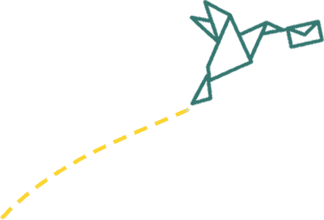

Welcome to the very first issue of Remote Impact Jobs in Marketing & Communications!
Every week, I collect remote roles in marketing and communications at organisations working on climate, democracy, culture, education and tech for good. All of them are open to people living in Europe, and I check each listing before it goes out.
I'm Stephanie, a marketing and communications professional with more than 15 years of experience at NGOs, cultural institutions and start-ups. I started this newsletter because most remote job boards are built for the US, and good impact roles in Europe are hard to find.
This week: sixteen remote jobs, eight in marketing (including the job of the week) and eight in communications, plus two hybrid picks.
⭐ Job of the week
Head of Marketing · Wikimedia Foundation
Wikimedia is looking for a Head of Marketing to grow the audience of Wikipedia and its sister projects. You can work from Germany, France, Italy, the Netherlands, Poland, Spain, Switzerland or the UK. Pay is set by country; the US range (143,478 to 217,585 USD) is only a guide.
View the roleMarketing
Field Marketing Manager, Firefox Enterprise · Mozilla
Help Firefox win business customers across Germany and the EU. A B2B role with a public-interest product.
View the role →Senior Marketing Manager · Enode
A climate tech company working on the energy transition. Remote-first across Europe, with an optional office in Oslo.
View the role →Director of External Relations, Marketing & Communications · Oak National Academy
Lead on marketing, communications and external relations at the public body that provides free lesson resources to teachers across England. UK residence required.
View the role →(Junior) Growth Associate · Ostrom
Entry-level growth role at a Berlin start-up that makes it easy to switch to clean, fair electricity. Listed as Berlin or remote.
View the role →GTM Product Marketing Lead · tem
Lead go-to-market and product marketing at a company that connects businesses directly with renewable energy generators.
View the role →Campaign Manager · tem
Run multi-channel brand campaigns from brief to final asset, including budgets, agencies, freelancers and events. A good fit for people with two to four years of experience in marketing, at an agency or in creative production.
View the role →Growth Lead, Sell Side · tem
Drive growth for a company rebuilding how energy is bought and sold to make it transparent and fair. You will lead product marketing and go-to-market for the side of the business that works with renewable generators.
View the role →Communications
Communications Lead, Wikimedia Enterprise (Contract) · Wikimedia Foundation
Lead communications for the commercial arm of Wikimedia, which provides Wikipedia data to large tech companies. Six-month contract, can be extended.
View the role →Campaigner · Campact
Run campaigns for one of Germany's largest civil society movements. German required. Two-year contract.
View the role →Senior Communications Manager · Every Casualty Counts
Lead communications and marketing at a small human rights charity that records every casualty of armed conflict. The role starts with a 12-month contract. Apply by email with your CV and a cover letter; the details are in the job description.
View the role →Writer · Our World in Data
Write about the world's biggest problems for a research publication read by millions. Office in Oxford, remote work possible, with some overlap with UK hours.
View the role →Principal, Executive Communications · Wikimedia Foundation
Shape communications for Wikimedia's leadership. Remote from the same eight European countries, working to US Eastern hours.
View the role →Communications and Content Officer · European Broadcasting Union (EBU)
Tell the stories of EBU Sport and Eurovision Sport for the alliance of Europe's public service media. Press releases, media relations, social-first content and video. Fully remote within the EEA.
View the role →Policy Communications Lead, Europe · Mozilla
Lead Mozilla's public messaging on privacy, AI, open source and competition in Europe, including media relations and spokesperson preparation.
View the role →Global Director of Strategic & Political Communications · Our Common Home
Build a global communications function that helps trusted local voices make caring for nature mainstream. You will work with partner organisations in around 19 countries.
View the role →💡 Practice note: Do the WhatsApp maths before you pitch it
WhatsApp is in many marketing plans for 2027, but the costs are often underestimated. Since July 2025, Meta has charged for every marketing message delivered through the WhatsApp Business Platform, and the rate depends on the recipient's country. For a number in Germany, it is currently about 11 cents per message. In much of Western Europe, it is around 5 cents. One campaign message to 10,000 German contacts therefore costs over 1,100 euros every time you send it. Since October 2026, replies in the chat also count, once you go over 1,000 a month.
If you want to test WhatsApp without that budget, start with a WhatsApp Channel. It is free and doesn't expose your followers' phone numbers. Use the paid API for messages that really need to land in someone's chat, and calculate the cost per send before you promise any results.
Also worth a look (hybrid)
- Manager*in Community Growth Wikipedia · Wikimedia Deutschland · Berlin, 1 to 2 office days a week · View
- Campaigner:in/Referent:in für Gasausstieg in Kommunen · Umweltinstitut München · Munich, partly remote · 30 to 39 hours a week · Deadline 7 Dec · View
Keep the hummingbird flying!
This newsletter is free and hand-checked every week. If it helped you find a role, or saved you an hour of scrolling, you can buy the hummingbird a little nectar.
Buy the hummingbird some nectarLanded a role through this newsletter? Drop me a line. Stories like that make my week.
How I check the roles: I only list paid roles in marketing and communications at organisations working on climate, policy, culture, education or tech for good. Each role must be doable from at least one European country. I check the original listing for the deadline and remote status, but things change quickly, so please confirm the details before you apply.
This is the first issue, so your feedback really counts. Write to me and tell me which roles or topics you would like to see more of.
Know someone who should see this? Share this page. Thank you for reading.

Stephanie